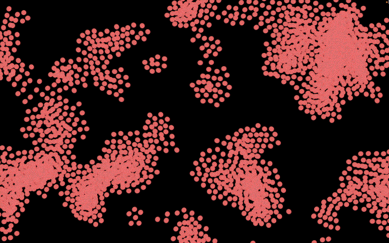

StarrySwarm
This work explores swarm algorithms that generate art from audio input. I visualize KANTS, PSO, and BOIDS using Processing and compare their visual outputs across genres and sounds. In my thesis, I discuss how StarrySwarm, my implementation of BOIDS, was the most dynamic across movement and color and responsive to changes in sound.
StarrySwarm


Kants

Particle Swarm Optimization

Demo Video
Live Demo and Lecture
View the Code
Video Gallery
Read my thesis here: